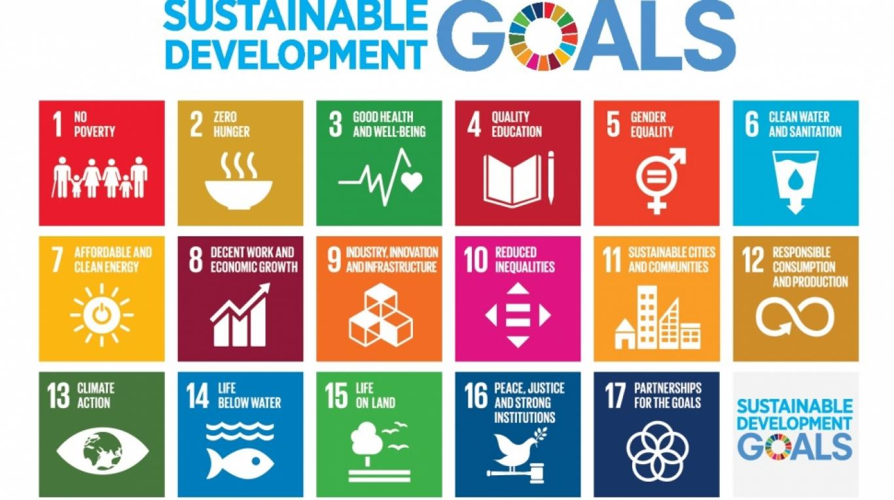

.png)




Tempat Penimbun Berikat (TPB) atau disebut juga Sustainable Development Goals (SDGs) adalah serangkaian tujuan yang ditetapkan oleh Perserikatan Bangsa-Bangsa (PBB) untuk mencapai kehidupan yang lebih baik dan lebih berkelanjutan bagi semua orang di planet ini. 17 tujuan SDGs itu saling terkait dan saling mendukung untuk mengatasi berbagai tantangan global yang sedang kita hadapi.
Dengan SDGs, kita menjadi agen perubahan untuk masa depan yang lebih baik lagi. Bersama-sama kita membangun berkelanjutan, menjaga lingkungan, memerangi ketidaksetaran, dan memastikan kehidupan yang layak bagi semua orang. Mulai dari tindakan kecil dalam kehidupan sehari-hari, hingga kebijakan global, kita semua bisa berkontribusi dalam menciptakan perubahan positif.
TPB/SDGs adalah agenda 2030 yang merupakan kesepakatan pembangunan berkelanjutan berdasarkan hak asasi manusia dan kesetaraan. SDGs itu berprinsip universal, integrasi, dan inklusif untuk meyakinkan bahwa tidak ada satupun yang tertinggal atau disebut. SDGs terdiri dari 17 tujuan dan 169 target yang merupakan kelanjutan dari Millenium Development Goals (MDGs) yang berakhir pada tahun 2015 lalu. Pelaksanaan TPB Indonesia didasari oleh Peraturan Presiden Republik Indonesia Nomor 59 Tahun 2017 tentang Pelaksanaan Pencapaian Tujuan Pembangunan Berkelanjutan.